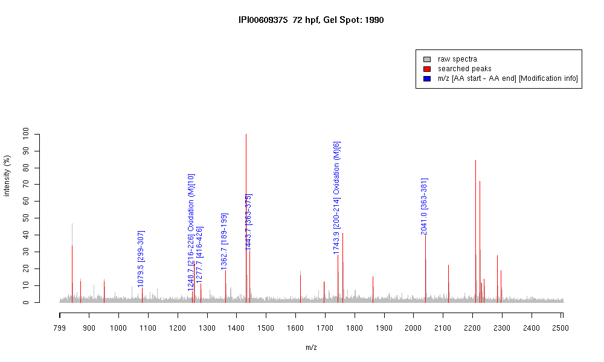

| Name | PREDICTED: type II cytokeratin isoform 8 |
|---|---|
| MW | 55445.1 |
| PI | 6.23 |
| Mascot Protein Score | 107 |
| Masses (matched / unmatched) | 7 / 26 |

| Peptide | MZ (calc) | MZ (observed) | Error (DA) | Error (PPM) | Start | Stop | Modifications |
|---|---|---|---|---|---|---|---|
| AQYEDIANR | 1079.5116 | 1079.5143 | 0.0027 | 3 | 299 | 307 | |
| QLDGLGNEKMK | 1248.6252 | 1248.666 | 0.0408 | 33 | 216 | 226 | Oxidation (M)[10] |
| LALDIEIATYR | 1277.71 | 1277.7073 | -0.0027 | -2 | 416 | 426 | |
| WSLLQEQTTTR | 1362.7013 | 1362.6941 | -0.0072 | -5 | 189 | 199 | |
| ANLEAQIAEAEER | 1443.7074 | 1443.7089 | 0.0015 | 1 | 363 | 375 | |
| SNIDAMFEAYIANLR | 1743.837 | 1743.8713 | 0.0343 | 20 | 200 | 214 | Oxidation (M)[6] |
| ANLEAQIAEAEERGELAVK | 2041.0559 | 2041.0353 | -0.0206 | -10 | 363 | 381 |